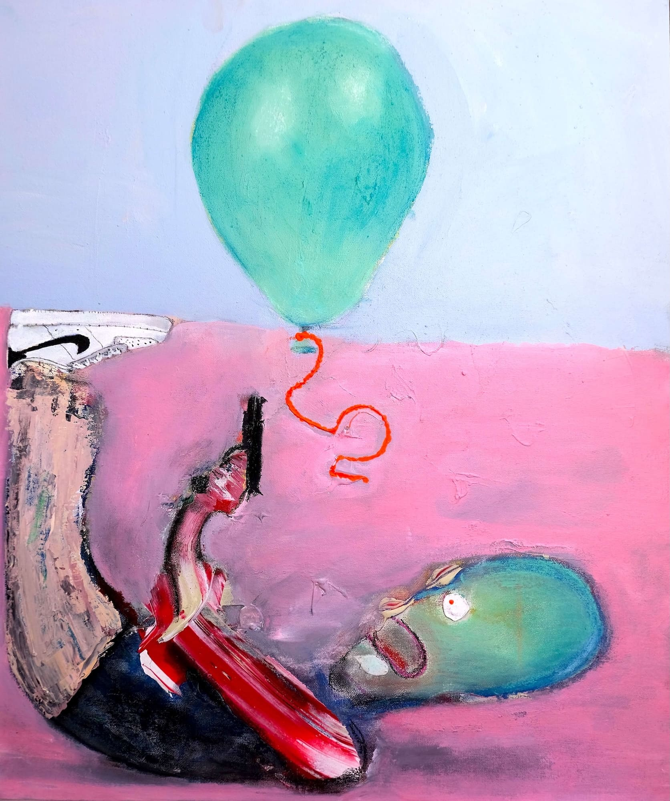

Idios Kosmos bedeutet private Welt. Diese Website stellt den Idios Kosmos dar und ist gleichzeitig ein Versuch, aus ihm auszubrechen.
Irgendwie ärgert mich das Wort Idios Kosmos bereits jetzt schon. "Aus dem Idios Kosmos ausbrechen", was soll das überhaupt heissen? Ich höre mich hier wie ein Nerd oder ein Looser an... Andererseits beschreibt der Begriff idios Kosmos schon sehr gut, wovon ich geplagt werde. Mit den ersten beiden einleitenden Sätzen ("Idios Kosmos bedeutet..." etc.) nehme ich zu viel vorweg. Eigentlich sollte das aus der Geschichte selbst klar werden, da. Das macht diesen Anfang so peinlich. Aber ich weiss nicht, ob ich es überhaupt schaffe eine Geschichte zu erzählen. Deswegen muss ich gleich zu Beginn sagen, worum es mir geht. Dann fühle ich mich nicht mehr unter Druck. Niemand zwingt mich hier eine Gesichte zu erzählen, ich weiss. Aber das stimmt nicht ganz. Irgendwie fühle ich mich dazu gezwungen (von Innen), obwohl es gar keine wirkliche Geschichte gibt, die ich erzählen könnte. Ich verwende das Wort "Irgendwie" viel zu häufig. Nur schlechte Autoren machen das. Gute Autoren würde "Irgendwie" sowieso nicht verwenden, geschweige denn wiederholen. Das Wort "sowieso" würden gute Autoren auch nicht verwenden. Es wirkt oberflächlich und irgendwie bauernhaft. Ich hasse mich.
Früher standen hier ausführliche Informationen zum Idios Kosmos. Ich habe diese Informationen von der Anfangsseite entfernt, da sie meine Leser schnell langweilten und abspringen liessen. Sie interessierten sich nicht für (Pseudo-)Intellektuelles Gerede. Ich verspreche, dass sich auf dieser Webseite Empörendes, Peinliches, Schreckliches und Sexuelles finden lässt. Man muss nur lange genug suchen.
Das Wort scheiden ist eng verwandt mit dem Idios Kosmos (inbesondere mit dem Versuch aus ihm auszubrechen). Das mag, jetzt noch, schwer ersichtlich sein, aber das Wort nimmt Einiges vorweg:

Ich schäme mich ganz besonders das Wort Scheide aufgeschrieben zu haben. Ich habe lange hin und her überlegt es aufzuschreiben, aber es wegzulassen, wäre unehrlich gewesen.
Auch fürchte ich mich davor, dass man mich nach diesen aufgeschriebenen Worten unsympathisch findet. Insbesondere Worte wie ausscheiden oder abschneiden könnten befremdlich wirken.
Weiter zur Einleitung